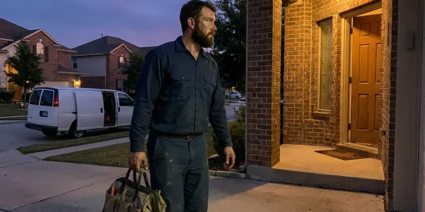

Foundation Leak Repair in Glasgow, DE
Protect your property from the hidden dangers of foundation leaks. GNV Plumbing delivers professional foundation leak repair services throughout Glasgow, DE.
- Reroute or Direct Repair
- Fast Electronic Leak Detection
- Insurance Documentation Provided
- Protects Soil and Structure

Your Local Foundation Leak Repair Experts in Glasgow, DE.
Quick action protects your foundation, flooring and soil, so we put a priority on foundation leak calls.
Professional Foundation Leak Repair in Glasgow, DE
GNV Plumbing understands that a foundation leak is both a plumbing problem and a structural risk. Much of Delaware sits on sandy coastal plain soil with a high water table, which affects slab, crawlspace, and drainage design. We stop the water fast and give you clear options to repair or reroute the line.
Our expertise includes:
- Complete exterior drainage solutions
- Direct repairs through concrete with careful patching and compaction
- Restoring water flow and structural integrity.

Additional Plumbing Repair Services in Glasgow, DE
We offer expert plumbing repair services across Glasgow, DE to fix leaks, restore flow, and keep your system running smoothly.


Customers
Why Choose GNV Plumbing for Foundation Leak Repair in Glasgow, DE?
Choosing GNV Plumbing means you are selecting a team dedicated to the long-term health of your home's foundation. A humid climate with hot summers and cool, damp winters puts steady stress on crawlspace plumbing and water heaters in Delaware. Our methods are proven to hold up through wet seasons and dry spells that can stress foundations.
- Multiple Options, We compare direct repair, reroute and repipe so you pick the best fit.
- Advanced Detection, We use acoustic leak detectors and thermal imaging to find hidden leaks without needless destruction.
- Durable Repairs, Our repairs use quality materials and proven methods for durable results on your foundation.
Citywide Coverage
No matter which part of Glasgow you live in, we can get a technician to you fast. Foundation leaks need prompt attention, and we treat them that way.
Experienced Team
Each technician at GNV Plumbing undergoes ongoing training to stay current on foundation repair techniques and safety protocols. You can trust our experts to handle your foundation leak with precision and care.
Safety-First Approach
Safety is paramount in all our foundation leak repair projects, and we follow local building codes and industry best practices in Glasgow, DE. We make sure all repairs are not only effective but also compliant and safe for your home.
Trusted Certified Glasgow Plumbing Services Professionals
At GNV Plumbing, we take pride in providing certified plumbing services throughout Glasgow, DE. Backed by leading industry credentials, our experienced plumbers combine technical skill with genuine customer care. Whether it is repair, installation, or maintenance, we follow strict safety and quality standards to deliver long-lasting results you can trust.
Call Us Now PHCC Plumbing Contractor Recognition
PHCC Plumbing Contractor Recognition Better Business Bureau (BBB) Accreditation
Better Business Bureau (BBB) Accreditation Angi Certified Pro
Angi Certified Pro ISO 9001 Quality Management Certification
ISO 9001 Quality Management CertificationProfessional Foundation Leak Repair Services in Glasgow, DE
Basement Wall Sealing and Waterproofing in Glasgow, DE
For homes with basements in Glasgow, DE, wall leaks can be a significant concern. We offer comprehensive basement waterproofing services, including interior and exterior sealing. This may involve applying waterproof coatings, injecting cracks with polyurethane or epoxy, or setting up interior drainage systems. These measures stop water from penetrating porous concrete and masonry, keeping your basement dry and healthy.

Water Line Reroute in Glasgow
Rerouting abandons the leaking line under the foundation and runs a new line through the attic or walls. This avoids breaking concrete and removes the risk of future leaks under the slab. We typically use PEX for reroutes because it is flexible and resists corrosion. Drywall openings are kept small and neat for simple patching.
Foundation Leak Detection in Glasgow
Accurate detection is the key step in foundation leak repair. We isolate hot and cold lines and pressure test them to verify a leak exists. Then we use acoustic listening equipment and electronic line tracing to find the exact spot beneath the foundation. Thermal imaging helps confirm hot water leaks by showing warm spots on the floor.
PEX and PVC Foundation Leak Repair in Glasgow
Newer homes often feature PEX or PVC plumbing, which, while durable, can still develop foundation leaks due to ground movement or poor installation. GNV Plumbing has the tools and expertise to repair leaks in these plastic piping systems. We use proper fusion and solvent welding techniques to ensure strong, leak-proof connections, restoring the integrity of your plumbing system beneath your Glasgow foundation.
Tunneling for Foundation Leaks in Glasgow, DE
In some cases, the best way to repair a foundation leak is by tunneling beneath the slab. This method lets our plumbers reach the damaged pipe directly without breaking through your home's interior flooring. GNV Plumbing is experienced in safe and efficient tunneling, minimizing disruption to your Glasgow, DE home and delivering a complete repair of the damaged pipe section.
Direct Foundation Leak Repair in Glasgow, DE
When the leak is in an accessible spot and the rest of the pipe is in good condition, direct repair is often the most economical choice. We cut a small opening in the floor, excavate to the pipe and replace the damaged section. The soil is compacted and the concrete is patched to match. Flooring can then be restored by your flooring contractor.
Advanced Leak Detection Technology in Glasgow, DE
The ability to accurately locate a foundation leak is essential for an effective repair. GNV Plumbing invests in modern leak detection technology, including high-frequency listening devices and specialized camera inspections, to pinpoint leaks with precision. This technology allows us to identify the exact location of the break, whether it's a small pinhole or a significant burst, minimizing invasive searching and repair costs for our Glasgow, DE customers.

Emergency Foundation Leak Repair in Glasgow
A sudden, severe foundation leak can cause rapid damage and requires immediate attention. GNV Plumbing offers emergency foundation leak repair services in Glasgow to handle critical situations. Whether it is a burst pipe under the slab or a large wall crack, our quick response team is equipped to limit damage, stop the leak, and perform necessary repairs quickly and efficiently. Do not hesitate to call us for urgent leak issues.
Foundation Leak Repair Near Me in Glasgow, DE
Our team is every day ready to serve the Glasgow community, so residents have access to reliable foundation leak repair services whenever needed. We pride ourselves on being a trusted local resource, providing quality workmanship and exceptional customer service right here in your neighborhood.
We know the soil, foundation types and building practices common in this area. That experience helps us choose the safest and most cost-effective repair. Give us a call to schedule leak detection today.
GNV Plumbing at a Glance
- Licensed and insured plumbers serving Glasgow, DE
- Same-day appointments and 24/7 emergency response
- Upfront, flat-rate pricing before work begins
- 4.8-star rated by 849+ Delaware customers
Glasgow Map
Glasgow Information
- Population
- 15,288
- Area codes
- Local
- Service area
- Glasgow and communities within 40 miles
- Nearby
- Bear, Brookside, Newark, Pike Creek Valley
Soil around a foundation responds when a hidden pipe leak soaks it, so a small leak under a foundation in Glasgow, DE can quickly turn into cracked slabs and shifting walls.
Expert Services
Trust our professionals for reliable GNV Plumbing solutions in Glasgow, DE.
Our Specialized Plumbing Services in Glasgow, DE
At GNV Plumbing, we provide a complete range of plumbing services across Glasgow, DE. From leak detection to full system installations, our team ensures fast, precise, and affordable service for both residential and commercial properties. Explore our core services below:


How Our Foundation Leak Repair Process Works in Glasgow, DE
Here is what to expect when you call us about a foundation leak.
Request a Quote
Call (302) 406-6354 and describe what you are noticing, such as warm floors, cracks or a moving water meter. We schedule leak detection quickly.
Detect and Plan
We pressure test and locate the leak, then review direct repair and reroute options. You get a written price for each.
Repair and Verify
We complete the chosen repair and pressure test the line. Concrete is patched or walls are closed, and we verify the leak is stopped.
Frequently Asked Questions About Foundation Leak Repair in Glasgow
The cost of foundation leak repair in Glasgow, DE can vary widely based on the leak's location, severity, and the repair method required. Minor spot repairs might range from $800 to $2,500, while more complex re-routing or tunneling could be $3,000 to $8,000 or more. We provide a detailed estimate after a thorough inspection.
For extensive foundation leak repairs, especially those involving structural changes, re-piping, or significant excavation, a permit may be required by local building codes. GNV Plumbing will help determine if a permit is needed for your specific repair and assist with the application process to stay in compliance.
While some very minor surface cracks might be sealed with DIY products, most foundation leaks, especially those involving plumbing or structural integrity, require professional expertise. Improper repairs can lead to greater damage, costly future fixes, and may not comply with local building codes. It is always best to consult with a professional.
Foundation leak repair is a complex task best left to licensed professionals. It requires specialized detection equipment, knowledge of plumbing codes, and expertise in working with various pipe materials under concrete. Attempting DIY repair can lead to further damage, higher costs, and potential safety hazards in your Glasgow home.
While not always preventable, regular plumbing inspections can help identify potential weaknesses. Keeping soil moisture consistent around your foundation, fixing drainage issues, and ensuring proper pipe installation during new construction or remodels can help reduce the risk of future foundation leaks in your Glasgow, DE home.
Simple repairs often do not require a permit, but reroutes and repipes may, depending on your city. We obtain permits when required.
Yes. Our repairs come with a written workmanship warranty, and materials carry manufacturer warranties. We go over coverage before starting work.
Warm or damp spots on the floor, cracks in tile or concrete, mildew under carpet, the sound of running water and a water meter that moves with all fixtures off are common signs. Higher water bills are often the first sign.
What People Are Saying About Our Plumbing Experts?

Robert G.
The trenchless sewer replacement saved our front yard. They walked us through the camera inspection footage first so we knew exactly what we were paying for.
Sewer Line Replacement · Glasgow, DE
Sofia M.
Two new toilets installed in one visit, no mess left behind, and the tech even adjusted a faucet he noticed was dripping. Fair pricing and really friendly.
Toilet Installation · Wilmington Manor, DE
Daniel K.
A pipe burst at 11 pm and they actually answered. The plumber showed up within the hour, shut everything down, and had us back to normal the next morning. Could not ask for more.
Emergency Plumbing · North Star, DELaura S.
I scheduled a water heater replacement, and the team made the process smooth and affordable. The new unit works perfectly, and they cleaned up after completing the job.
Water Heater Replacement · North Star, DEJames P.
Our commercial plumbing system had a leak under the sink, and GNV Plumbing handled it professionally. The plumbers arrived quickly and restored everything without disruption to our customers.
Commercial Plumbing · Newark, DE
Emily R.
I called GNV Plumbing for plumbing repair, and the technician was fast, polite, and thorough. They explained the problem clearly and fixed it the same day. I will definitely hire them again. Highly recommended!
Plumbing Repair · Bear, DE